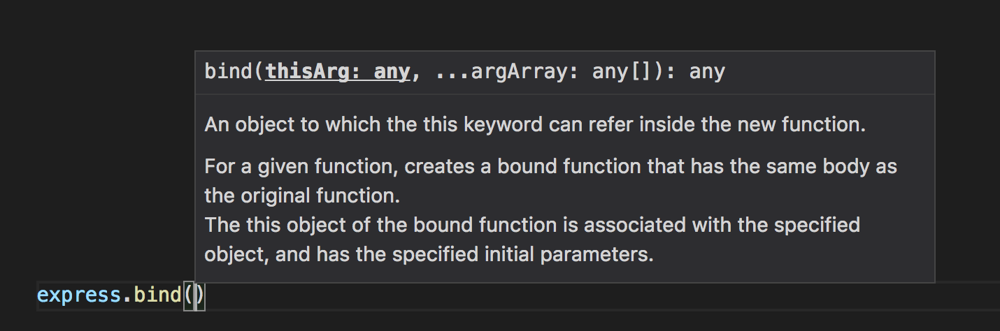
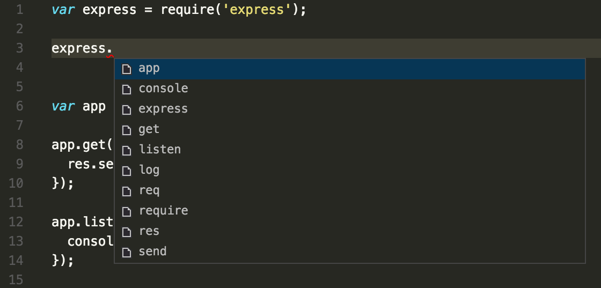

IntelliSense
IntelliSense is a general term for a variety of code editing features including: code completion, parameter info, quick info, and member lists. IntelliSense features are sometimes called by other names such as "code completion", "content assist", and "code hinting."
IntelliSense for your programming language
VS Code IntelliSense is provided for JavaScript, TypeScript, JSON, HTML, CSS, Less, and Sass out of the box. VS Code supports word based completions for any programming language but can also be configured to have richer IntelliSense by installing a language extension.
Below are the most popular language extensions in the Marketplace. Click on an extension tile below to read the description and reviews to decide which extension is best for you.
IntelliSense Features
VS Code IntelliSense features are powered by a language
service. A language service provides intelligent code
completions based on language semantics and an analysis of
your source code. If a language service knows possible
completions, the IntelliSense suggestions will pop up as you
type. If you continue typing characters, the list of members
(variables, methods, etc.) is filtered to include only members
containing your typed characters. Pressing
kbstyle(Tab) or kbstyle(Enter) will
insert the selected member.
You can trigger IntelliSense in any editor window by typing
kb(editor.action.triggerSuggest) or by typing a
trigger character (such as the dot character
(kbstyle(.)) in JavaScript).

Tip: The suggestions widget supports CamelCase filtering meaning you can type the letters which are upper cased in a method name to limit the suggestions. For example, "cra" will quickly bring up "createApplication".
If you prefer, you can turn off IntelliSense while you type. See Customizing IntelliSense below to learn how to disable or customize VS Code's IntelliSense features.
As provided by the language service, you can see
quick info for each method by either pressing
kb(toggleSuggestionDetails) or clicking the info
icon. The accompanying documentation for the method will now
expand to the side. The expanded documentation will stay so
and will update as you navigate the list. You can close this
by pressing kb(toggleSuggestionDetails) again or
by clicking on the close icon.
After choosing a method you are provided with parameter info.

When applicable, a language service will surface the
underlying types in the quick info and method signatures. In
the image above, you can see several any types.
Because JavaScript is dynamic and doesn't need or enforce
types, any suggests that the variable can be of
any type.
Types of Completions
The JavaScript code below illustrates IntelliSense completions. IntelliSense gives both inferred proposals and the global identifiers of the project. The inferred symbols are presented first, followed by the global identifiers (shown by the document icon).
VS Code IntelliSense offers different types of completions, including language server suggestions, snippets, and simple word based textual completions.

|
Methods, Functions and Constructors |

|
Variables and Fields |
| Classes | |
| Interfaces | |

|
Modules |

|
Properties and Attributes |

|
Values and Enumerations |

|
References |

|
Keywords |
| Global Identifiers | |

|
Colors |

|
Unit |

|
Snippet Prefixes |

|
Words |

|
Miscellaneous |
Customizing IntelliSense
You can customize your IntelliSense experience in settings and key bindings.
Settings
The settings shown below are the default settings. You can
change these settings in your settings.json file
as described in
User and Workspace Settings.
{
// Controls if quick suggestions should show up while typing
"editor.quickSuggestions": true,
// Controls if suggestions should be accepted with "Enter" - in addition to "Tab". Helps to avoid ambiguity between inserting new lines and accepting suggestions.
"editor.acceptSuggestionOnEnter": true,
// Controls the delay in ms after which quick suggestions will show up.
"editor.quickSuggestionsDelay": 10,
// Enable word based suggestions
"editor.wordBasedSuggestions": true,
// Enable parameter hints
"editor.parameterHints": true
}
By default, VS Code shows snippets and completion proposals in
one widget. You can control the behavior with the
editor.snippetSuggestions setting. To remove
snippets from the suggestions widget, set the value to
"none". If you'd like to see snippets, you can
specify the order relative to suggestions; at the top
("top"), at the bottom ("bottom"),
or inline ordered alphabetically ("inline"). The
default is "bottom".
Key Bindings
The key bindings shown below are the default key bindings. You
can change these in your keybindings.json file as
described in
Key Bindings.
Note: There are many more key bindings relating to IntelliSense. Open the Default Keyboard Shortcuts (File > Preferences > Keyboard Shortcuts) and search for "suggest".
{
{
"key": "ctrl+space",
"command": "editor.action.triggerSuggest",
"when": "editorHasCompletionItemProvider && editorTextFocus && !editorReadonly"
},
{
"key": "ctrl+space",
"command": "toggleSuggestionDetails",
"when": "editorTextFocus && suggestWidgetVisible"
},
{
"key": "ctrl+alt+space",
"command": "toggleSuggestionFocus",
"when": "editorTextFocus && suggestWidgetVisible" },
}
Troubleshooting
If you find IntelliSense has stopped working, the language service may not be running. Try restarting VS Code and this should solve the issue. If you are still missing IntelliSense features after installing a language extension, open an issue in the repository of the language extension.
Tip: For configuring and troubleshooting JavaScript IntelliSense see here.
A particular language extension may not support all the VS
Code IntelliSense features. Review the extension's README to
find out what is supported. If you think there are issues with
a language extension, you can usually find the issue
repository for an extension through the
Marketplace. Navigate to the extension's detail page and click the
Support link.
Next Steps
IntelliSense is just one of VS Code's powerful features. Read on to learn more:
- JavaScript - Get the most out of your JavaScript development, including configuring IntelliSense.
- Node.js - See an example of IntelliSense in action in the Node.js walkthrough.
- Debugging - Learn how to set up debugging for your application.
Common Questions
Q: Why am I not getting any suggestions?

A: This can be caused by a variety of reasons. First, try restarting VS Code. If the problem persists, consult the language extension's documentation. For JavaScript specific troubleshooting, please see the JavaScript language topic.
Q: Why am I not seeing method and variable suggestions?

A: This issue is caused by missing type declaration (typings) files in JavaScript. You can check if a type declaration file package is available for a specific library by using the TypeSearch site. There is more information about this issue in the JavaScript language topic. For other languages, please consult the extension's documentation.